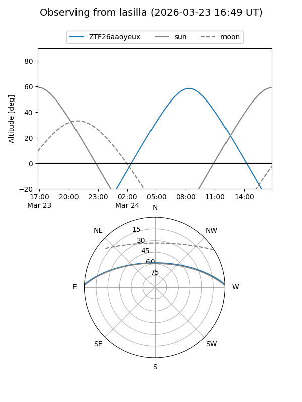
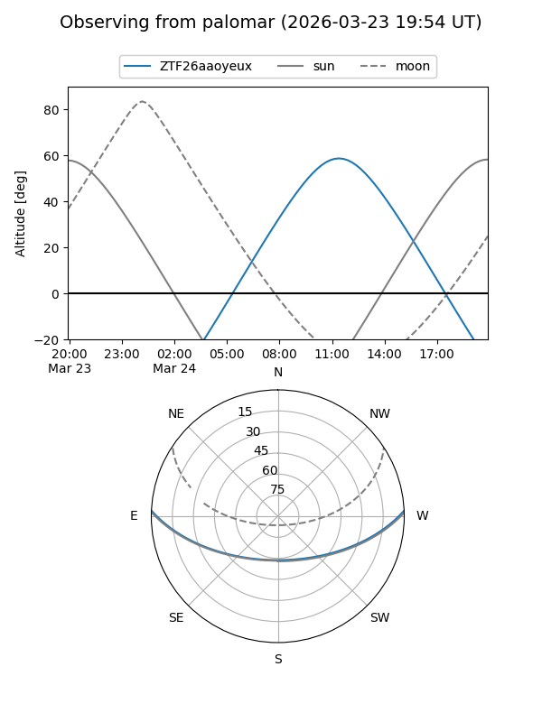

ZTF26aaoyeux
Target ZTF26aaoyeux at 2026-03-23 12:39
Aliases and brokers:
FINK: link
Lasair: link
ALeRCE: link
alt names
ZTF26aaoyeux (ztf,fink_ztf)
Coordinates:
equatorial (ra, dec) = 235.6608,+2.21447
equatorial (HMS+DMS) = 15:42:38.60,+02:12:52.08
galactic (l, b) = (9.0988,+42.07697)
Flags:
Photometry:
last ztfg=18.66
1 ztfg detections
Lightcurve
Visibility


Additional plots